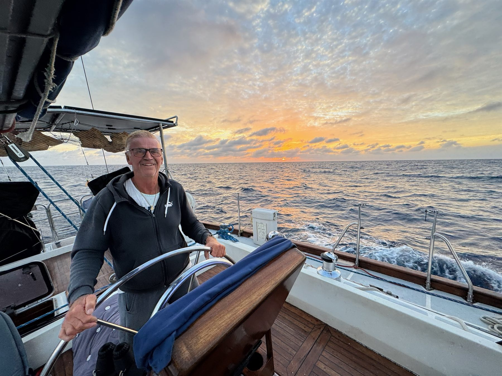
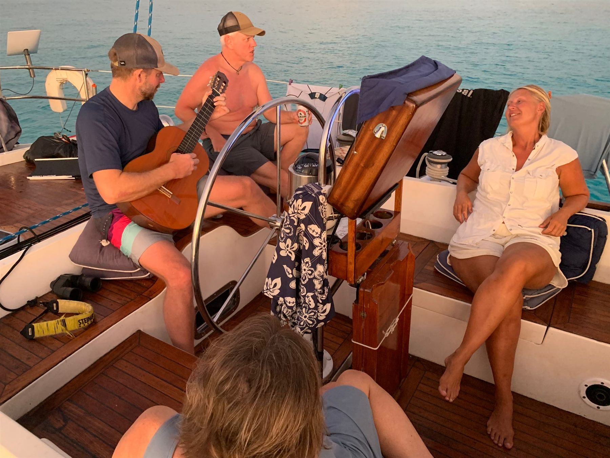
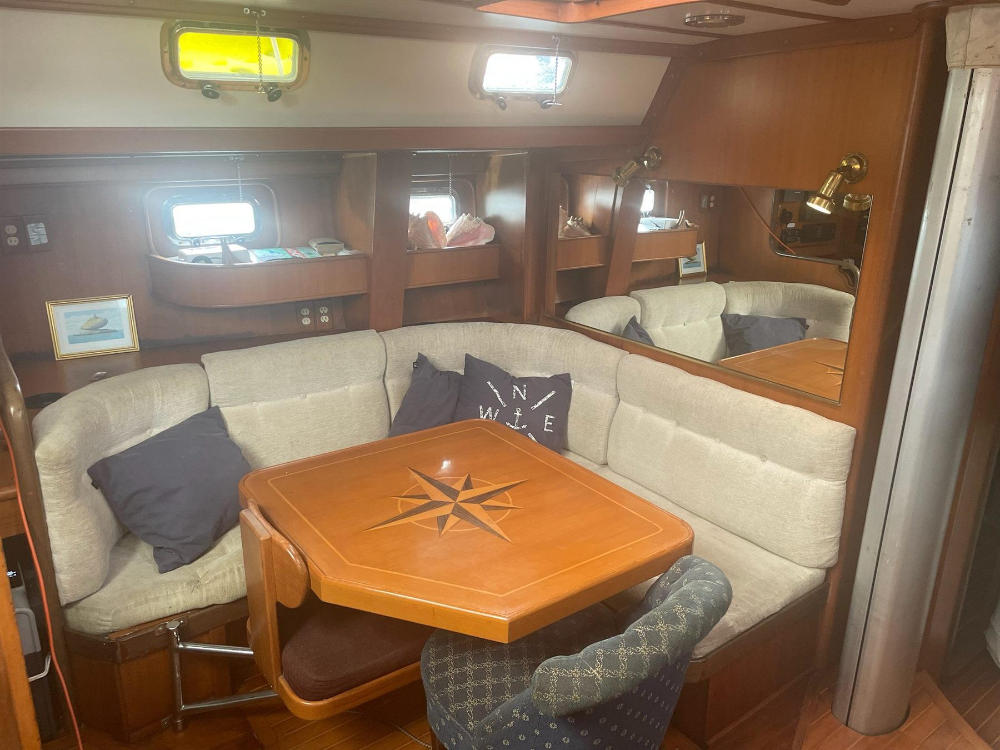

Leg 1
Rio Dulce → Isla Mujeres
From a jungle river to Mexico, across 600 miles of reef
Offshore passage
1 of 5 berths booked

Caribbean sailing
Join as crew, learn by taking part and discover the Caribbean aboard Lady Athena with a captain who has spent a lifetime at sea.
40+ yearsat sea for Captain Alf Grell
Master Marinerlicence, unlimited
5 guestsat most on each leg
Seven legs from December to April. Join one, or several in a row. Maximum five guests on each leg. Sending a request costs nothing, and nothing is booked until Alf confirms and you pay the deposit.
Leg 1
From a jungle river to Mexico, across 600 miles of reef
Offshore passage
1 of 5 berths booked
Leg 2
Christmas at sea, the Cayman walls and Jamaica
Offshore passage
Leg 3
760 miles of blue water to the Virgin Islands
Offshore passage
Leg 4
Short sails, flamingos and white sand
Island hopping
Leg 5
Five islands, four flags, two World Heritage sites
Island hopping
2 of 5 berths booked
Leg 6
Twenty days of volcanoes, rainforest and French islands
Island hopping
Leg 7
Turtles, turquoise water and the Grenadines
Island hopping
Captain Alf Grell has more than 40 years at sea, 30 of them as captain of international superyachts. You steer, trim the sails and help plan each day’s route. On the offshore legs you also stand watch at night.
Anegada, Petite Terre, Lighthouse Reef and the Tobago Cays have no cruise pier. You arrive under sail and anchor off the beach.
Lady Athena takes five guests at most. You share the watches, the cooking and the cockpit table at sunset. Kiel Thomson from Kentucky wrote: “The friendship, food and experience sailing with you all will forever be one of the best.”
No boat to buy, insure or maintain. Food, diesel, harbour fees and crew accident insurance are part of the price. You book your own flights and travel insurance.
Lady Athena is a beautiful, well equipped boat. We sailed some pretty rough winds but Lady Athena handled these conditions very well. Captain Alf is a seasoned and qualified sailor and leader. Not only being a very competent sailor Susanne is also a well and very welcoming warm host and an efficient manager! Together, the two (Susanne and Alf) made a wonderful team. Me and my sister felt safe the whole journey from Grebbestad to Inverness. It was a great and pleasant adventure!
Everything was really great. The food, equipment, social atmosphere and the feeling of a really good adventure. I had my own big cabin which was very comfortable. I never had that luxury before! Fair winds and following seas guys!
I will always remember this journey with Lady Athena with a smile on my face. I learned so much from the professional captain and mate which gave me the urge and self confidence to get a boat on my own.

Meet the captain
More than 40 years at sea, about 30 of them as captain of international superyachts. Alf has led crews from many countries and cultures, and he enjoys teaching seamanship and seeing people grow.
His aim is simple: that you feel confident, have a good time and go home with both an adventure and new skills.

